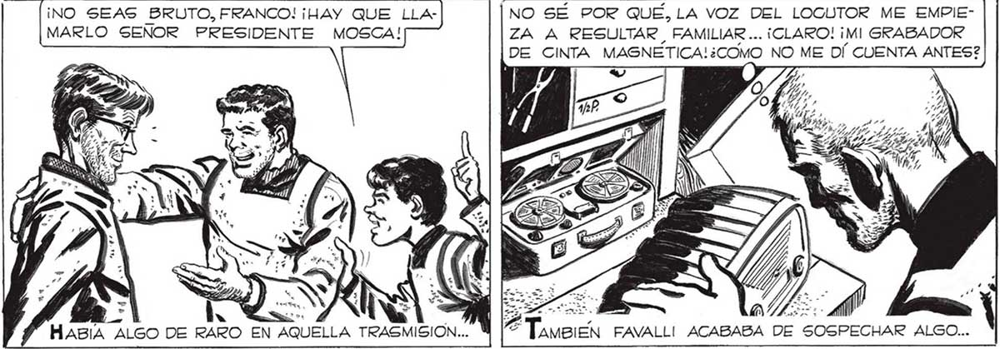

¡NO SEAS BRUTO, FRANCO! ¡HAY QUE LLAMARLO SENOR PRESIDENTE MOSCA! h HABIA ALGO DE RARO EN A USTED, SEÑOR MOSCA, QUE ENTIENDE DE ESTAS COSAS, SABRA” EN QUÉ NEGOCIO SE PUEDE COMPRAR UN BASTON DE MANDO...NNOSOTROS QUISIÉRAMOS REGALARLE UNO... ¿QUE HACEMOS, FAVA 7 ¡FENOMENO, SEÑOR MOS CA! S[...LA RADIO ESTA ENCENDIDA PERO NO TRASMITE NA FUERON ELLOS, FRANCO Y PABLO.. GRABARON EN LA CINTA UNA TRASMISION FAL: SA, PARA TOMARLE EL PELO A MOSCA.. NO SÉ POR QUE, LA VOZ DEL LOCUTOR ME EMPIEZA A RESULTAR FAMILIAR ... ¡CLARO! ¡MI GRABADOR DE CINTA MAGNETICA!¿COMO NO ME DÍ CUENTA ANTES? AMBIEN FAVALLI! ACABABA DE SOSPECHAR ALGO... UE ¡MIREN AFUERA! ¡PRONTO! No ¿Lecué A CONCLUIR, PORQUE HUBO UN GRITO... 329
